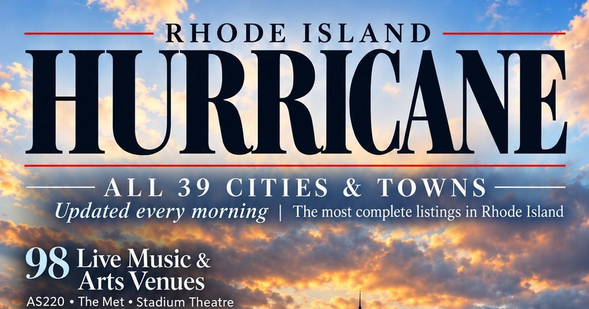

Our Publications


Also from Island News Media

Support This Site
Researching and maintaining these sites come with real costs, and your support keeps them online and the research going. If you've used the listings, the stories or the research, please send what you believe is fair. Thank you.
Donate by credit or debit card Donate with Venmo
VISAMastercardAMEXDiscoverApple PayGoogle Pay
Card payments are processed securely by Stripe. Venmo: @douggarceau
About the Publisher ▾
These sites are published by Island News Media Productions LLC, a Rhode Island company founded by Doug Garceau, its Founder, Editor and Director. Doug is a former rock music journalist from Seattle, where he wrote the column Raising Hell with Guitar Doug, and a formally trained drummer and percussionist, with formal Berklee training in Ableton and recent Berklee drum set training with Rod Morgenstein of the Dixie Dregs and Winger. He is a working musician, with recent shows with So Many Rhodes, a Grateful Dead cover band. Island News Media publishes Jamestown Island News, Rhode Island Hurricane, New York City Scream and The Boston Rambler, and The Names He Carried, a nonfiction family history with its Academic Edition.
Advertise With Us ▾
All Island News Media sites are open to advertisers. Contact doug@islandnewsmedia.com for pricing.
Available for Paid Work ▾
Open to paid projects and contract jobs in AI and multimedia.
Services I offer ▾
- AI research and deep-research reports
- Website design and building
- AI consulting and AI training for individuals and businesses
- Multimedia production: video editing in Adobe Premiere Pro; AI image, video and audio generation
- Special effects for film and video
- Music for film and video
- Custom AI music production with Suno
- Podcast production and publishing on Spotify, including in-person recording with professional microphones and an Akai MPC X or audio interface
- Audio engineering
- Game development: building or recreating any game, including classic arcade games with original controls (sample: Defender)
- Drum and percussion sample libraries, sound design and MIDI instruments (sample: Amadeus School of Drums)
- Music and instruction books, including method books with playable sheet music (sample: the 100-chapter Amadeus Drum Method)
- Advertising and marketing
- Music journalism and magazine editing
- Live concert and event photography
See samples of my work ▾
- Amadeus School of Drums · my biggest multimedia project: a full drum book and an at-home drum school, with 16 features (samples on request):
- Three lesson levels: Beginner, Intermediate and Advanced (conservatory-level drumming and percussion)
- The Amadeus Drum Method: a full 100-chapter drum book of playable sheet music
- All 40 drum rudiments with play-along audio
- An interactive drum kit played on screen
- The Drum Room: every orchestral percussion instrument
- A 263-groove library of play-along loops
- The Drum Solo lessons
- A Sound Studio
- An AI drum helper chat for students
- A gear shop in eight categories
- A guide to America's best vintage drum shops
- On Tour: who's behind the kit
- Drum industry news, updated automatically
- AI in Music and robot drummers
- An installable phone app
- A lessons newsletter
- Newspace · social network with profiles, Top 8 friends, profile songs, blogs, groups, events and private mail
- Enclave · secure in-house communication platform, originally built for doctors and researchers; demo on request
- Defender · full working recreation of the classic arcade game, compatible with an original Defender external control board
- The Names He Carried · nonfiction family history, research and web
- The Names He Carried: Academic Edition · archival research and digital edition
- Jamestown Island News · news and listings site
- Rhode Island Hurricane · news and listings site
- New York City Scream · city arts and entertainment site
- The Boston Rambler · city arts and entertainment site
Contact: doug@islandnewsmedia.com · Doug Garceau on LinkedIn · Published by Island News Media Productions LLC
Contact
Doug Garceau
Founder, Editor & Director
doug@islandnewsmedia.comFor advertising, partnerships and event submissions across all our publications.